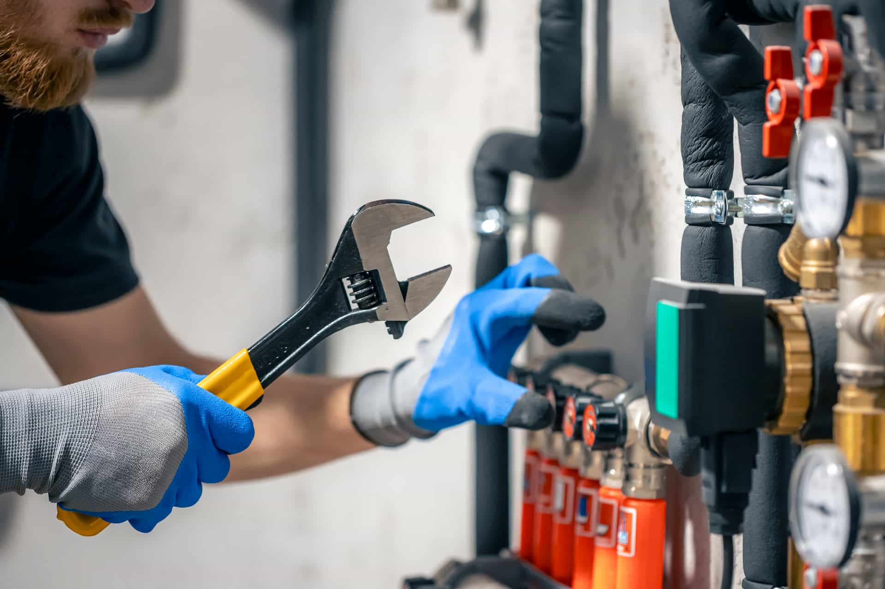
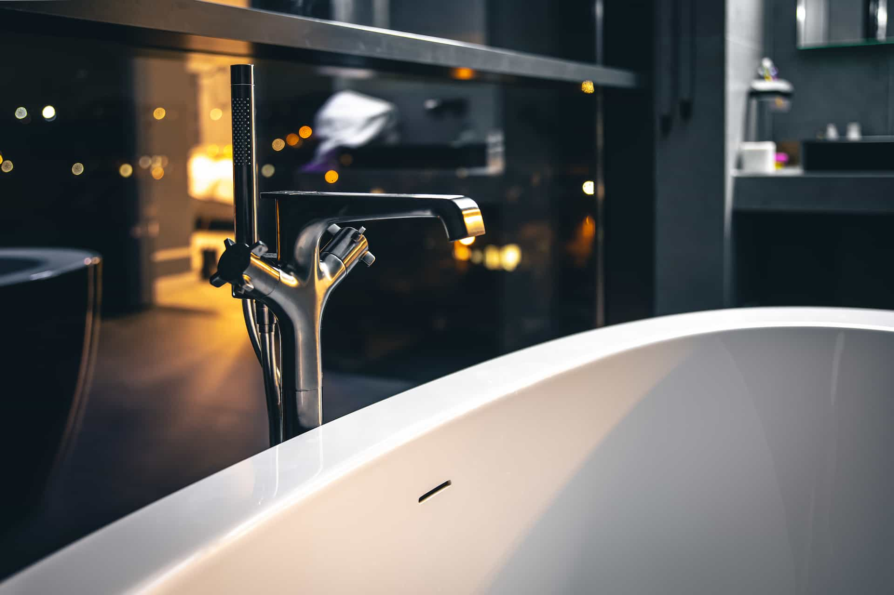
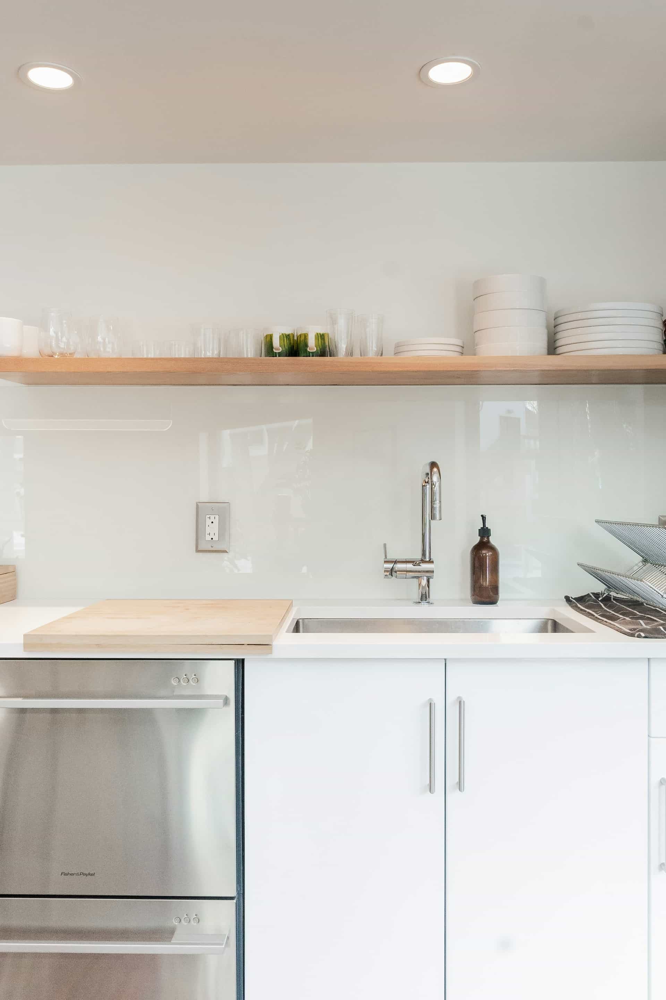
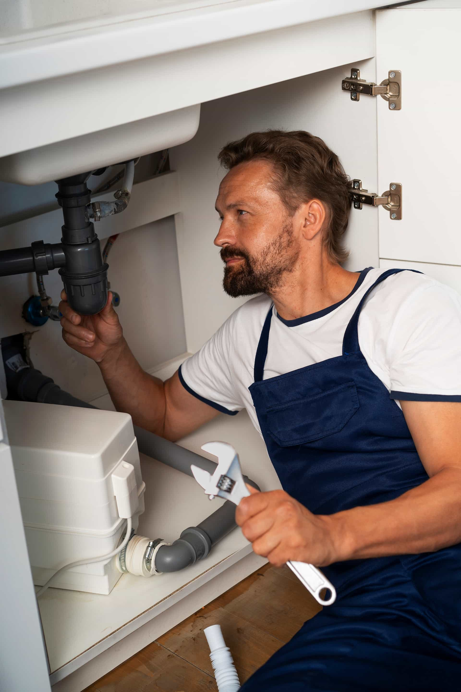

Search The Site
Plumbing RTB Platform
21.4K+
homeowner plumbing requests submitted
150+
local contractor partners in active markets
24/7
live call path for urgent plumbing issues
Start the Right Plumbing Request for Your Home and ZIP Code
BlueRoute helps homeowners take the right first step when something leaks, backs up, or needs an upgrade. Call for urgent situations, or send an estimate request to connect with independent local contractors for drains, leaks, water heaters, fixtures, installations, and larger system work.
Aggregator platform, not a direct plumbing contractor
Local matching by issue type and ZIP code
Start Your Request
Call for urgent issues
Start a request in under a minute
Share the issue, room, and timing so the platform can route the request toward the most relevant local contractor follow-up.
Usually under 30 seconds
Independent local providers
Featured Service Paths
View All Services
Service categories that generate the most homeowner requests
These categories drive the strongest mix of urgent calls and estimate requests through the platform.

Emergency Plumbing Help
Connect quickly for urgent leaks, backups, water shutoff concerns, and after-hours plumbing situations.
Explore service
Drain & Pipe Cleaning
Request local contractor options for recurring clogs, slow drains, backups, and line flow issues.
Explore service
Plumbing Installation Solutions
Compare estimate options for remodels, new fixture connections, and line installation projects.
Explore serviceWater Heater Repair & Setup
Find local provider connections for hot water issues, setup requests, and replacement planning.
Explore service
How It Works
A simpler path from plumbing problem to local contractor follow-up
01
Choose call or form
Use the phone route for urgent issues or the estimate path for more detailed project requests.
02
Add service details
ZIP code, service type, and a short message help narrow the request to the right local category.
03
Connect with local contractors
Requests are aligned with independent plumbing professionals serving the market and job type.
04
Review next-step options
Homeowners can discuss timing, estimate details, and project scope directly with providers.
Platform Metrics
Platform metrics tied to real homeowner activity across the network
These metrics represent platform activity, homeowner demand, and provider-network outcomes routed through BlueRoute. They do not describe direct labor performed by BlueRoute itself.
Estimate-ready traffic
Live call activity
Home-service conversion focus
Service Requests Submitted
Emergency calls, repair leads, and estimate-ready project forms.
Happy Homeowners
Users who moved from plumbing issue to local provider follow-up.
Pipes Replaced
Projects routed through repipe and larger upgrade conversations.
Local Contractor Partners
Independent providers participating in active routing zones.
Inside Real Homes
The kinds of home situations that usually lead to calls and estimate requests
The platform spans urgent repairs, visible fixture upgrades, and full-room plumbing projects. These image blocks make that mix easier to understand at a glance.
Urgent category
Urgent Repairs
Burst pipes, active leaks, drainage backups, and other time-sensitive plumbing issues that often lead homeowners to call right away.

Visible upgrades
Fixture Upgrades
Visible improvements such as faucet replacements, toilet upgrades, shower fixture changes, and other plumbing-related updates.

Larger project scope
Full Plumbing Projects
Larger plumbing jobs tied to bathroom remodels, system updates, room renovations, and more involved home improvement work.
Why Homeowners Use It
Why homeowners use BlueRoute instead of bouncing between contractor websites

A category-led platform helps homeowners sort the issue before committing to the next call
BlueRoute is designed to feel more useful than a generic directory. The homeowner can describe the actual problem, choose the right category, and start the next conversation with better urgency and scope context.
- Service categories built around real homeowner intent, not vague directory browsing.
- Local routing language that supports both urgent repair needs and estimate-led upgrades.
- Clear aggregator positioning so expectations stay accurate before the provider conversation begins.
Speed without confusion
Urgent plumbing issues often need a fast decision path. The platform keeps the actions simple: call or request an estimate.
More local options
Homeowners can start from one structured request instead of comparing availability across multiple unrelated sources.
Transparent business model
BlueRoute clearly positions itself as a connection platform, not as the plumbing company performing the work.
Common Plumbing Issues
The plumbing problems homeowners most often describe first
Active leaks and water damage risk
Sudden leaks, pipe failures, and moisture spread are often the highest urgency categories.
Slow drains or recurring backups
Clogs and drainage issues tend to escalate when multiple fixtures are affected at once.
No hot water or heater trouble
Performance drops, no hot water, or visible moisture around a unit often lead to quick estimate requests.
Hidden leaks behind walls or slabs
Water bill spikes, stains, and unexplained moisture often prompt homeowners to seek diagnostic help.
Toilet and fixture problems
Running toilets, loose bases, dripping faucets, and worn-out hardware are frequent request drivers.
Aging plumbing systems
Repeated repairs often lead homeowners to explore repipes and broader system replacement options.
Better Request Quality
What helps local contractors understand the request faster
A short, specific request usually leads to a cleaner follow-up. These are the details homeowners most often include when they want the right provider conversation sooner.
Ready-to-route details
Small details make it easier to match the request to the right local category
Whether the need is urgent, estimate-led, or tied to a remodel, clear input helps independent local contractors understand scope before they follow up.
Active leak or standing water
Kitchen, bathroom, basement, or utility room
Repair help, estimate, or project planning
Best callback time and ZIP code
Start Request
Describe the issue clearly
Examples like burst pipe, clogged drain, no hot water, or leak behind a wall help narrow the request path.
Say where it is happening
Kitchen, bathroom, laundry area, basement, garage, or utility room gives local contractors better job context.
Note urgency and timing
Active water, a blocked drain, or total hot-water loss usually belongs on the call path rather than a slower estimate flow.
Clarify the goal
Homeowners often specify whether they need repair help, replacement options, or pricing for a remodel-led plumbing project.
Homeowner Trust
Why the BlueRoute experience feels easier for homeowners
“
Fast connection when the leak started spreading
I wanted one place to start instead of guessing which contractor site to trust. The call option made it easier to move quickly.
“
Useful for comparing installation estimates
We were planning fixture upgrades and needed local options. The request form gave enough structure without feeling heavy.
“
Clear that it was a connection service
I liked that the site explained the providers were independent and that it was there to connect me, not pretend to be the contractor itself.
FAQ
What homeowners usually want to know before they submit
BlueRoute Plumbing Network is a free connection platform. It helps homeowners connect with independent local plumbing contractors and does not claim to perform the plumbing work directly.
Use the phone option when the issue is urgent, active water is involved, or the situation is disrupting the home right now. The form is ideal for estimate-driven projects and non-emergency requests.
No. The site is free for homeowners who want to connect with local plumbing providers near them.
Yes. Many homeowners use the platform for water heater replacement, fixture upgrades, installation projects, and broader system replacement discussions.
Yes. Contractors and providers are independent businesses. Availability, estimate details, and work performed are handled directly by those providers.
Include the service category, ZIP code, urgency, and a short description of the issue or project. That helps route the request more accurately.
Ready To Connect?
Choose the fastest path for your plumbing request
Call for urgent plumbing issues or use the estimate form when you want to send better detail before local contractor follow-up begins.